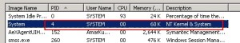
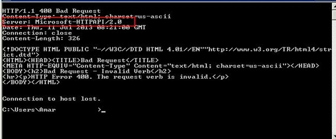

How to check which port is using port 80 ?
netstat -o -n -a | findstr 0.0:80
The Last field shows the PID.
Now check in task manager, which process is PID 4.

There are a number of well-known Windows programs which use port 80:
IIS
SQL Server Reporting Services
Other windows base wed servers like Iplanet, some apps like chat apps like skype, video calling tools.
You can stop all the service through “services.msc” console and set it manual.
NT Kernel & System (Microsoft-HTTPAPI/2.0) :-
NT Kernel & System is an important service and stopping it will probably cause issue to you Windows in a blue-screen like “fatal error”. Therefore, follow the below mention steps:
telnet 127.0.0.1 80
It will put you in a blue screen.
Not type “GET” and press enter (GET will written in black color so you can see it in your display).
You will get something like this.

You will see a line like "Server: Microsoft-HTTPAPI/2.0", it means Microsoft-HTTPAPI/2.0 is listening to port 80.
Service name for Microsoft-HTTPAPI/2.0 is Web Deployment Agent Service, which is deployed with WebMatrix.
You need to stop it from “services.msc” and need to set it manual, so that it will not start again after next reboot.